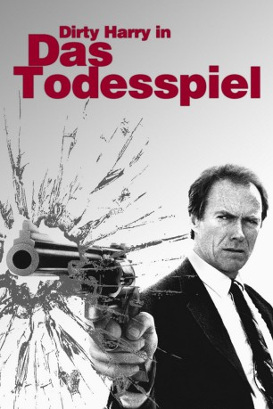

#1315 Dirty Harry 5 - Das Todesspiel
Alternativ: The Dead Pool
 
 IMDB-Wertung: 6.3 / 10
IMDB-Wertung: 6.3 / 10  Metascore: 46
Metascore: 46 
Nach dem Mord an einem drogensüchtigen Rockmusiker und einer Filmkritikerin entdeckt Inspektor Calahan eine Liste, auf der auch der Name des Toten und sein eigener stehen. "Dirty Harrys" Hauptverdächtiger wird der Regisseur Swan, der sich das makabre "Todesspiel" ausgedacht hat: Es werden Wetten abgeschlossen, welche bekannten Persönlichkeiten das Jahr nicht überleben. Bei seinen Ermittlungen muß sich Calahan noch mit den Anschlägen eines rachsüchtigen Mafioso herumschlagen, sowie mit der attraktiven TV-Reporterin Samantha, die sich in ihn verliebt. Als sich herausstellt, daß nicht Swan, sondern ein Psychopath der Mörder ist, stellt ihn Calahan auf dem Hafengelände und bereinigt das Problem auf seine Weise.
Jahr: 1988
Dauer: 91 Minuten
FSK: 16
Land: USA Studio: Warner Bros. Pictures A Time Warner Entertainment CompanyTonspuren:
Untertitel:
Auflösung: 1080p (1920x1080) Größe: 3072 MB
Genre: Action, Krimi, Mystery, Thriller
Regisseur: Buddy Van Horn
Drehbuch: Harry Julian Fink, Rita M. Fink, Steve Sharon, Durk Pearson, Sandy Shaw
Soundtrack: Lalo Schifrin
Darsteller:
 Clint Eastwood als Harry Callahan
Clint Eastwood als Harry Callahan Patricia Clarkson als Samantha Walker
Patricia Clarkson als Samantha Walker Liam Neeson als Peter Swan
Liam Neeson als Peter Swan- David Hunt als Harlan Rook
 Michael Goodwin als Lt. Ackerman
Michael Goodwin als Lt. Ackerman- Jeff Richmond als Freeway Reporter #1
 Jim Carrey als Johnny Squares
Jim Carrey als Johnny Squares- Scott Vance als Gunman #2
 Karen Kahn als T.V. Associate Producer
Karen Kahn als T.V. Associate Producer- Shawn Elliott als Chester Docksteder
 Marc Alaimo als Embarcadero Bodyguard #2
Marc Alaimo als Embarcadero Bodyguard #2- Justin Whalin als Jason
- Michael E. Burgess als Bar Patron , uncredited
- Brian Danker als Background Officer , uncredited
- Duff McKagan als Musician at Funeral , uncredited
- Axl Rose als Musician at Funeral , uncredited
- Slash als Musician at Funeral , uncredited
 Theodore Carl Soderberg als Detective , uncredited
Theodore Carl Soderberg als Detective , uncredited- Evan C. Kim als Al Quan
- Michael Currie als Captain Donnelly
- Darwin Gillett als Patrick Snow
- Anthony Charnota als Lou Janero
- Christopher P. Beale als D.A. Thomas McSherry
- John Allen Vick als Lt. Ruskowski
- Patrick N. Van Horn als Freeway Reporter #2
- Sigrid Wurschmidt als Freeway Reporter #3
- Deborah A. Bryan als Girl in Rock Video
- Nicholas Love als Jeff Howser
- Maureen McVerry als Vicky Owens
- John X. Heart als Samantha's Cameraman
- Victoria Bastel als Suzanne Dayton
- Kathleen Turco-Lyon als Officer at Trailer
- Michael Faqir als Sergeant at Trailer
- Ronnie Claire Edwards als Molly Fisher
- Wallace Choy als Chinese Store Manager
- Melodie Soe als Chinese Restaurant Hostess
 Kristopher Logan als Gunman #1
Kristopher Logan als Gunman #1- Glenn Wright als Detective Hindmark
- Stu Klitsner als Minister
- Ren Reynolds als Perry
- Ed Hodson als Paramedic at Elevator
- Edward Hocking als Warden Hocking
- Diego Chairs als Butcher Hicks
- Patrick Valentino als Pirate Captain
- Calvin Jones als Pirate Tug Reporter #1
- Melissa Martin als Pirate Tug Reporter #2
- Phil Dacey als Detective Dacey
 Louis Giambalvo als Gus Wheeler
Louis Giambalvo als Gus Wheeler- Peter Anthony Jacobs als Sgt. Holloway
- Bill Wattenburg als Nolan Kennard
Datei: X:\5-Pentalogie(A-Z)\Dirty Harry\Dirty Harry 5 - Das Todesspiel (1988, FSK16, 1920x1080).mkv seit 19.06.2015
Festplatte: HD Collection-3(N-Z)-6(A-Z)
 Es gibt insgesamt 8 Filme in der Gruppe '5-Pentalogie(A-Z)\Dirty Harry'
Es gibt insgesamt 8 Filme in der Gruppe '5-Pentalogie(A-Z)\Dirty Harry'